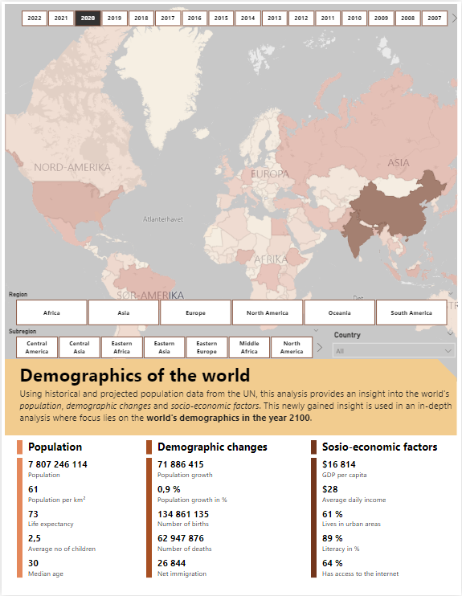
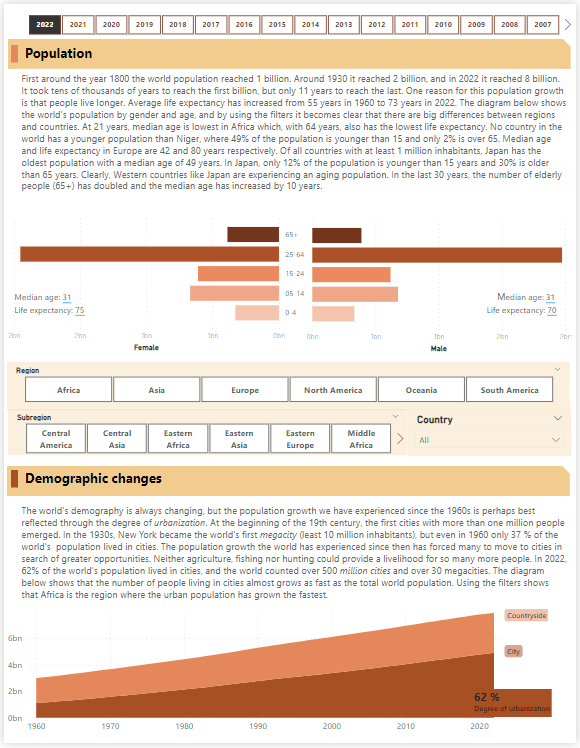
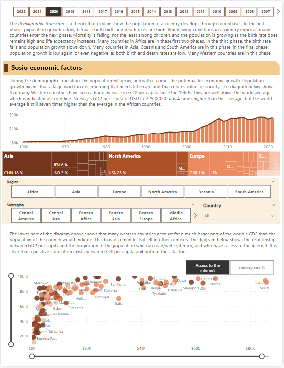
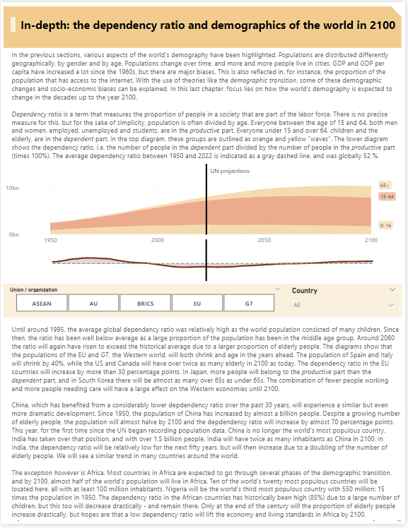

Demographics of the World
Introduction
In this 4-page report, I analyze population data from the UN. In addition, I use data from Our World in Data and The World Bank. In the first sections, the focus is on population, demographic changes and socio-economic factors. Using this new insight and expected population data from the UN, the focus of the in-depth analysis is how the world's demography will develop towards the year 2100. Click on one of the pages to access the report.
Population
The focus of this section is how the world's population has evolved to look the way it does today. It turns out that there are major differences between countries when it comes to median age and life expectancy.
Demographic changes
In this section, I take a closer look at the population growth the world has seen in the last 60 years. This growth is particularly evident through the degree of urbanization: the population in cities has almost grown at the same rate as the world population as a whole.
sosio-economic factors
Sosio-economic factors are factors that have to do with both social and economic conditions. In this section, I look at several such factors,
like GDP per capita, and how these factors can influence each other also.



In-depth analysis
In this section, I have analyzed how the world's demography will develop towards the year 2100. A term I have used in this context is dependency ratio. The dependency ratio in a society is the relationship between those who typically are and are not in the labor force (the productive and dependent populations). A high dependency ratio means that there are many people who potentially need to be supported by society, and few who can help support them. This measures the pressure on the productive population, which of course has a major impact on various social and economic conditions. By looking at how the dependency ratio in a society is expected to develop, one may also gain insight into how society will develop as a consequence of that. By using the filters in the report, we notice that both the population and the dependency ratio are expected to develop quite differently in different countries and different parts of the world.
Sources
- Demographic indicators (UN, 2023)
- Population by age group (Our World in Data, 2022)
- Number of internet users (Our World in Data, 2020)
- Medical doctors per 1000 people (Our World in Data, 2020)
- Literacy (The World Bank, 2022)
- GDP (The World Bank, 2021)
- Income (The World Bank, 2022)
- Urban population % (The World Bank, 2022)